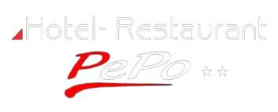
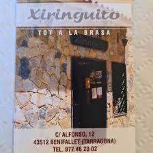
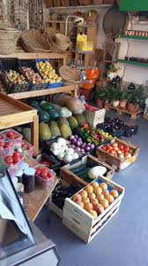
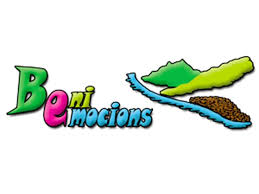

On menjar, comprar i viure experiències
Benifallet és el punt de referència més proper per preparar una sortida a la Serra de Cardó. Aquests serveis poden ser útils abans o després d’una ruta.

Restaurant Pepo
Restaurant familiar de Benifallet amb cuina mediterrània, producte de qualitat i plats a la brasa. També disposa d’allotjament rural, fet que el converteix en una bona opció per combinar gastronomia i estada.
- Tipus: cuina mediterrània i brasa
- Ubicació: Benifallet
- Ideal per: dinar després d’una ruta

Restaurant Xiringuito
Restaurant situat al centre de Benifallet, conegut per la cuina casolana i mediterrània, amb plats abundants i ambient proper. És una opció pràctica per menjar al poble abans o després de visitar l’entorn.
- Tipus: cuina casolana i mediterrània
- Adreça: C/ Alfons XII, 12
- Telèfon: 977 462 002

Fruita, Mel i Oli Vallespí
Empresa familiar de Benifallet dedicada al cultiu i venda directa de productes propis. Treballen fruita, mel, oli i altres productes de proximitat, amb una filosofia basada en la qualitat i el respecte per la natura.
- Tipus: botiga de producte local
- Adreça: C/ Marcel·lí Domingo, 36
- Productes: fruita, mel, oli i productes km 0

Beniemocions
Empresa d’activitats situada a Benifallet especialitzada en experiències vinculades al riu Ebre i al territori. Ofereixen activitats com piragüisme, propostes d’aventura i experiències pensades per descobrir l’entorn natural.
- Tipus: activitats d’aventura
- Ubicació: Benifallet
- Ideal per: completar la visita amb una experiència al riu Ebre